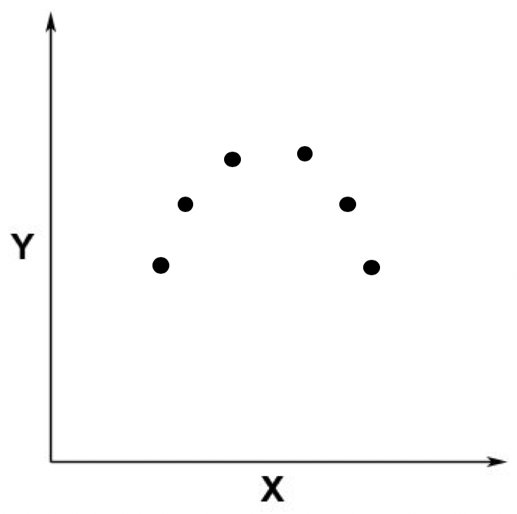
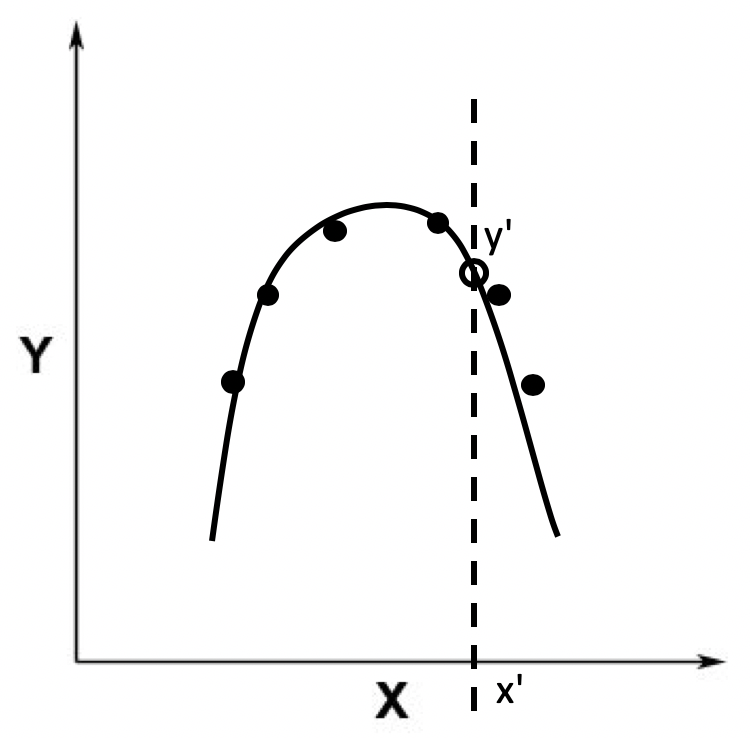
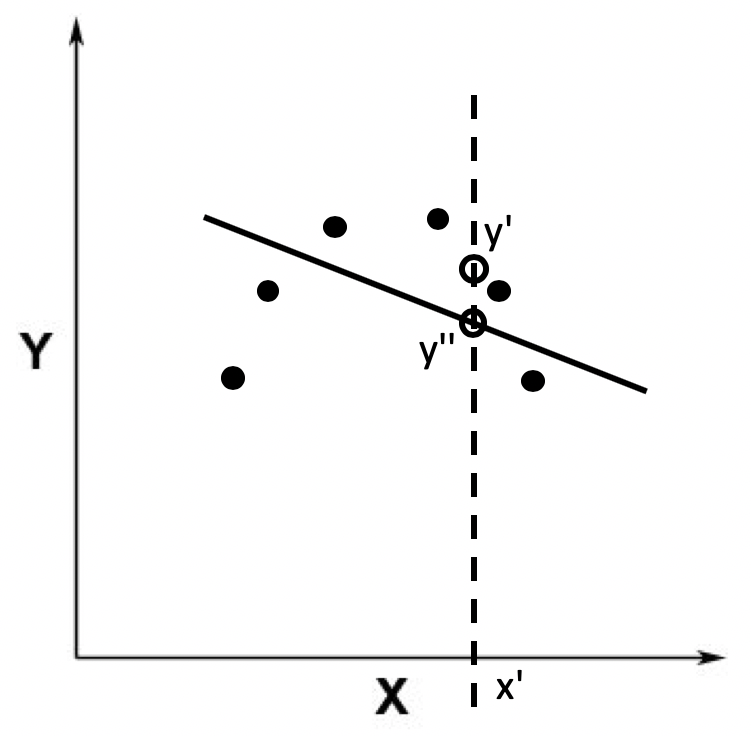
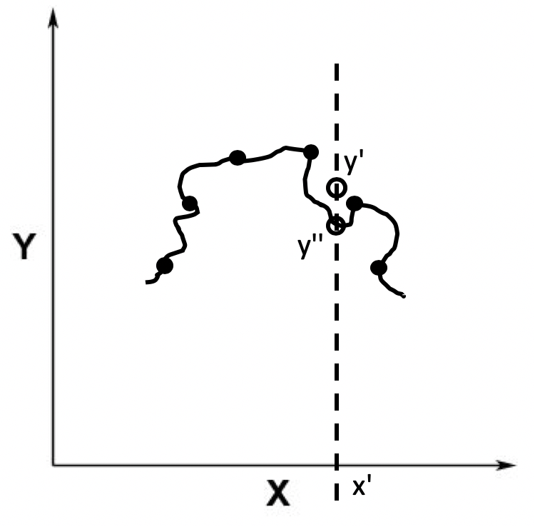
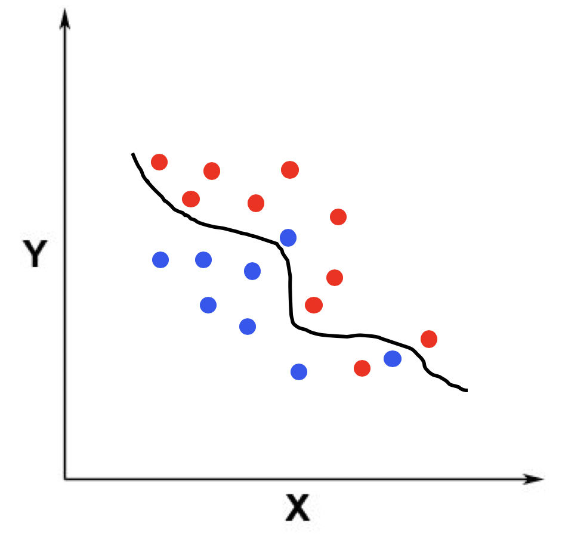
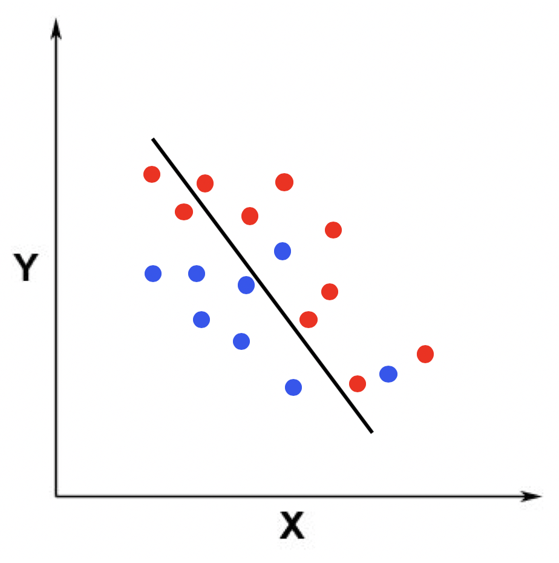
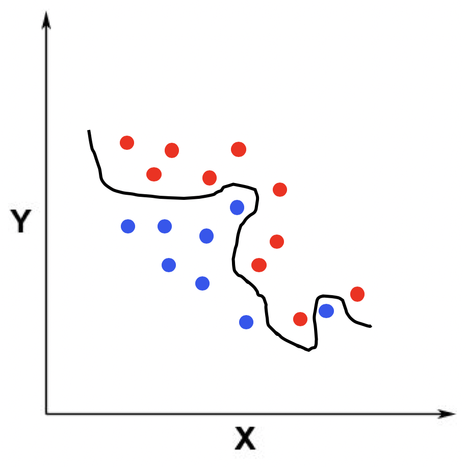
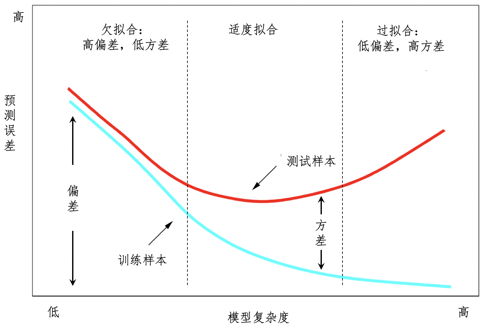

- 01 二进制：不了解计算机的源头，你学什么编程.md
- 02 余数：原来取余操作本身就是个哈希函数.md
- 03 迭代法：不用编程语言的自带函数，你会如何计算平方根？.md
- 04 数学归纳法：如何用数学归纳提升代码的运行效率？.md
- 05 递归（上）：泛化数学归纳，如何将复杂问题简单化？.md
- 06 递归（下）：分而治之，从归并排序到MapReduce.md
- 07 排列：如何让计算机学会“田忌赛马”？.md
- 08 组合：如何让计算机安排世界杯的赛程？.md
- 09 动态规划（上）：如何实现基于编辑距离的查询推荐？.md
- 10 动态规划（下）：如何求得状态转移方程并进行编程实现？.md
- 11 树的深度优先搜索（上）：如何才能高效率地查字典？.md
- 12 树的深度优先搜索（下）：如何才能高效率地查字典？.md
- 13 树的广度优先搜索（上）：人际关系的六度理论是真的吗？.md
- 14 树的广度优先搜索（下）：为什么双向广度优先搜索的效率更高？.md
- 15 从树到图：如何让计算机学会看地图？.md
- 16 时间和空间复杂度（上）：优化性能是否只是“纸上谈兵”？.md
- 17 时间和空间复杂度（下）：如何使用六个法则进行复杂度分析？.md
- 18 总结课：数据结构、编程语句和基础算法体现了哪些数学思想？.md
- 19 概率和统计：编程为什么需要概率和统计？.md
- 20 概率基础（上）：一篇文章帮你理解随机变量、概率分布和期望值.md
- 21 概率基础（下）：联合概率、条件概率和贝叶斯法则，这些概率公式究竟能做什么？.md
- 22 朴素贝叶斯：如何让计算机学会自动分类？.md
- 23 文本分类：如何区分特定类型的新闻？.md
- 24 语言模型：如何使用链式法则和马尔科夫假设简化概率模型？.md
- 25 马尔科夫模型：从PageRank到语音识别，背后是什么模型在支撑？.md
- 26 信息熵：如何通过几个问题，测出你对应的武侠人物？.md
- 27 决策树：信息增益、增益比率和基尼指数的运用.md
- 28 熵、信息增益和卡方：如何寻找关键特征？.md
- 29 归一化和标准化：各种特征如何综合才是最合理的？.md
- 30 统计意义（上）：如何通过显著性检验，判断你的A_B测试结果是不是巧合？.md
- 31 统计意义（下）：如何通过显著性检验，判断你的A_B测试结果是不是巧合？.md
- 32 概率统计篇答疑和总结：为什么会有欠拟合和过拟合？.md
- 33 线性代数：线性代数到底都讲了些什么？.md
- 34 向量空间模型：如何让计算机理解现实事物之间的关系？.md
- 35 文本检索：如何让计算机处理自然语言？.md
- 36 文本聚类：如何过滤冗余的新闻？.md
- 37 矩阵（上）：如何使用矩阵操作进行PageRank计算？.md
- 38 矩阵（下）：如何使用矩阵操作进行协同过滤推荐？.md
- 39 线性回归（上）：如何使用高斯消元求解线性方程组？.md
- 40 线性回归（中）：如何使用最小二乘法进行直线拟合？.md
- 41 线性回归（下）：如何使用最小二乘法进行效果验证？.md
- 42 PCA主成分分析（上）：如何利用协方差矩阵来降维？.md
- 43 PCA主成分分析（下）：为什么要计算协方差矩阵的特征值和特征向量？.md
- 44 奇异值分解：如何挖掘潜在的语义关系？.md
- 45 线性代数篇答疑和总结：矩阵乘法的几何意义是什么？.md
- 46 缓存系统：如何通过哈希表和队列实现高效访问？.md
- 47 搜索引擎（上）：如何通过倒排索引和向量空间模型，打造一个简单的搜索引擎？.md
- 48 搜索引擎（下）：如何通过查询的分类，让电商平台的搜索结果更相关？.md
- 49 推荐系统（上）：如何实现基于相似度的协同过滤？.md
- 50 推荐系统（下）：如何通过SVD分析用户和物品的矩阵？.md
- 51 综合应用篇答疑和总结：如何进行个性化用户画像的设计？.md
- 导读：程序员应该怎么学数学？.md
- 开篇词 作为程序员，为什么你应该学好数学？.md
- 数学专栏课外加餐（一） 我们为什么需要反码和补码？.md
- 数学专栏课外加餐（三）：程序员需要读哪些数学书？.md
- 数学专栏课外加餐（二） 位操作的三个应用实例.md
- 结束语 从数学到编程，本身就是一个很长的链条.md
32 概率统计篇答疑和总结：为什么会有欠拟合和过拟合？
你好，我是黄申。
在概率统计这个模块中，我们讲了很多监督式机器学习相关的概念。你可能对朴素贝叶斯、决策树、线性回归这类监督式算法中的一些概念还是不太清楚。比如说，为什么要使用大量的文档集合或者语料库来训练一个朴素贝叶斯模型呢？这个过程最后得到的结果是什么？为什么训练后的结果可以用于预测新的数据？这里面其实涉及了很多模型拟合的知识。
为了帮助你更好地理解这些内容，今天我就来说说监督式学习中几个很重要的概念：拟合、欠拟合和过拟合，以及如何处理欠拟合和过拟合。
拟合、欠拟合和过拟合
每种学习模型都有自己的假设和参数。虽然朴素贝叶斯和决策树都属于分类算法，但是它们各自的假设和参数都不相同。朴素贝叶斯的假设是贝叶斯定理和变量之间的独立性，而决策树的假设是集合的纯净程度或者混乱程度。我们这里所说的参数，是指根据模型假设和训练样本推导出来的数据，例如朴素贝叶斯中的参数是各种先验概率和条件概率，而决策树的参数是各个树结点以及结点上的决策条件。
了解了什么是模型的假设和参数，我们来看看什么是模型的拟合（Model Fitting）。在监督式学习中，我们经常提到“训练一个模型”，其实更学术的说法应该是“拟合一个模型”。
拟合模型其实就是指通过模型的假设和训练样本，推导出具体参数的过程。有了这些参数，我们就能对新的数据进行预测。这样说有些抽象，我画了张一元回归的图来帮助你理解。假设我们的数据点分布在一个二维空间。

其中黑色的点表示训练数据所对应的点，x轴表示唯一的自变量，y轴表示因变量。根据这些训练数据，拟合回归模型之后，所得到的模型结果是一条黑色的曲线。

有了这条曲线，我们就能根据测试数据的x轴取值（如图中的x’）来获取y轴的取值（如图中的y’），也就是根据自变量的值来获取因变量的值，达到预测的效果。这种情况就是适度拟合（right fitting）。
可是，有的时候拟合得到的模型过于简单，和训练样本之间的误差非常大，这种情况就是欠拟合（Under Fitting）。比如下面这根黑色的曲线，和第一根曲线相比，它离数据点的距离更大。这种拟合模型和训练样本之间的差异，我们就称为偏差（Bias）。

欠拟合说明模型还不能很好地表示训练样本，所以在测试样本上的表现通常也不好。例如图中预测的值y’’和测试数据x’对应的真实值y’相差很大。
相对于欠拟合，另一种情况是，拟合得到的模型非常精细和复杂，和训练样本之间的误差非常小，我们称这种情况为过拟合（Over Fitting）。比如下面这根黑色的曲线，和第一根曲线相比，离数据点的距离更近，也就是说偏差更小。

初学者通常都会觉得过拟合很好，其实并不是这样。过拟合的模型虽然在训练样本中表现得非常优越，但是在测试样本中可能表现不理想。为什么会这样呢？这主要是因为，有的时候，训练样本和测试样本不太一致。
比如，用于训练的数据都是苹果和甜橙，但是用于测试的数据都是西瓜。在上图中，测试数据x’所对应的y值应该是y’，而不是预测的y’’。这种训练样本和测试样本之间存在的差异，我们称为方差（Variance）。在过拟合的时候，我们认为模型缺乏泛化的能力，无法很好地处理新的数据。
类似地，我以二维空间里的分类为例，展示了适度拟合、欠拟合和过度拟合的情况。仍然假设训练数据的点分布在一个二维空间，我们需要拟合出一个用于区分两个类的分界线。我分别用三张图展示了这三种情况下的分界线。
首先，第一张是适度拟合的情况。

这张图中，蓝色的点表示分类1的训练数据点，红色的点表示分类2的训练数据点。在适度拟合的时候，分界线比较好地区分了蓝色和红色的点。
在欠拟合的时候，模型过于简单，分界线区分训练样本中蓝色和红色点的能力比较弱，存在比较多的错误分类。

在过拟合的时候，模型过于复杂，分界线区分训练样本中蓝色和红色点的能力近乎完美，基本上没有错误的分类。但是，如果测试样本和这个训练样本不太一样，那么这个模型就会产生比较大的误差。

在常见的监督式学习过程中，适度拟合、欠拟合和过拟合，这三种状态是逐步演变的。我也用一张图来解释这个过程。

在这个图中，x轴表示模型的复杂程度，y轴表示预测的误差。蓝色曲线表示模型在训练样本上的表现，它和x轴之间的距离表示了偏差。而红色曲线表示模型在测试样本上的表现，它和蓝色曲线之间的距离表示了方差。
从图的左侧往右侧看，模型的复杂度由简单逐渐复杂。越复杂的模型，越近似训练样本，所以偏差就不断下降。可是，由于过于近似训练样本，模型和测试样本的差距就会加大，因此在模型复杂度达到一定程度之后，在训练样本上的预测误差反而会开始增加，这样就会导致训练和测试样本之间的方差不断增大。
在这个图中，最左边是高偏差、低方差，就是我们所说的欠拟合，最右边是低偏差、高方差，就是我们所说的过拟合。在靠近中间的位置，我们希望能找到一个偏差和方差都比较均衡的区域，也就是适度拟合的情况。
如何处理欠拟合和过拟合？
解释了什么是模型拟合、欠拟合和过拟合，我们下面来说说，有哪些常见的处理过拟合和欠拟合的方法。
想要解决一个问题，我们先要搞清楚产生这个问题的原因。欠拟合问题，产生的主要原因是特征维度过少，拟合的模型不够复杂，无法满足训练样本，最终导致误差较大。因此，我们就可以增加特征维度，让输入的训练样本具有更强的表达能力。
之前讲解朴素贝叶斯的时候，我提到“任何两个变量是相互独立的假设”，这种假设和马尔科夫假设中的一元文法的作用一致，是为了降低数据稀疏程度、节省计算资源所采取的措施。可是，这种假设在现实中往往不成立，所以朴素贝叶斯模型的表达能力是非常有限的。当我们拥有足够的计算资源，而且希望建模效果更好的时候，我们就需要更加精细、更加复杂的模型，朴素贝叶斯可能就不再适用了。
比如，在最近非常火的电影《流浪地球》中，计算机系统莫斯拥有全人类文明的数字资料库。假设我们手头也有一个庞大的资料库，也有莫斯那么强大的计算能力，那么使用一元文法来处理数据就有点大材小用了。我们完全可以放弃朴素贝叶斯中关于变量独立性的假设，而使用二元、三元甚至更大的N元文法来处理这些数据。这就是典型的通过增加更多的特征，来提升模型的复杂度，让它从欠拟合阶段往适度拟合阶段靠拢。
相对应的，过拟合问题产生的主要原因则是特征维度过多，导致拟合的模型过于完美地符合训练样本，但是无法适应测试样本或者说新的数据。所以我们可以减少特征的维度。之前在介绍决策树的时候，我提到了这类算法比较容易过拟合，可以使用剪枝和随机森林来缓解这个问题。
剪枝，顾名思义，就是删掉决策树中一些不是很重要的结点及对应的边，这其实就是在减少特征对模型的影响。虽然去掉一些结点和边之后，决策树对训练样本的区分能力变弱，但是可以更好地应对新数据的变化，具有更好的泛化能力。至于去掉哪些结点和边，我们可以使用前面介绍的特征选择方法来进行。
随机森林的构建过程更为复杂一些。“森林”表示有很多决策树，可是训练样本就一套，那这些树都是怎么来的呢？随机森林算法采用了统计里常用的可重复采样法，每次从全部n个样本中取出m个（m），然后构建一个决策树。重复这种采样并构建决策树的过程若干次，我们就能获得多个决策树。对于新的数据，每个决策树都会有自己的判断结果，我们取大多数决策树的意见作为最终结果。由于每次采样都是不完整的训练集合，而且有一定的随机性，所以每个决策树的过拟合程度都会降低。
从另一个角度来看，过拟合表示模型太复杂，而相对的训练数据量太少。因此我们也可以增加训练样本的数据量，并尽量保持训练数据和测试数据分布的一致性。如果我们手头上有大量的训练数据，则可以使用交叉验证（Cross Validation）的划分方式来保持训练数据和测试数据的一致性。其核心思想是在每一轮中，拿出大部分数据实例进行建模，然后用建立的模型对留下的小部分实例进行预测，最终对本次预测结果进行评估。这个过程反复进行若干轮，直到所有的标注样本都被预测了一次而且仅一次。如果模型所接受的数据总是在变化，那么我们就需要定期更新训练样本，重新拟合模型。
总结
第二模块中，我介绍了很多概率统计中常用的概念。随机变量和它的概率分布体现了事物发生的不确定性。而条件概率、联合概率和边缘概率体现了多个随机变量之间的关系以及是不是相互独立，通过这三者的关系，我们可以推导出贝叶斯定理。在贝叶斯定理和变量独立性假设的基础之上，我讲了朴素贝叶斯算法中的公式推导，以及如何使用先验概率来预测后验概率。由于朴素贝叶斯假定多个变量之间相互独立，因此特别适合特征维度很多、特征向量和矩阵很稀疏的场景。基于词包方法的文本分类就是个非常典型的例子。
文本分类涉及了词与词之间相互独立的假设，然后延伸出多元文法，而多元文法也广泛应用在概率语言模型中。语言模型是马尔科夫模型的一种，而隐马尔科夫模型在马尔科夫模型的基础之上，提出了两层的结构，解决了我们无法直接观测到转移状态的问题。
由概率知识派生而来的信息论，也能帮助我们设计机器学习的算法，比如决策树和特征选择。统计中的数据分布可以让特征值转换更合理，而假设检验可以告诉我们哪些结论是更可靠的。
由于很多监督式学习都是基于概率统计的，所以我使用了一些学习算法来进行讲解。你会发现，概率和统计可以帮助这些算法学习训练样本中的特征，并可以对新的数据进行预测，这就是模型拟合的过程。
思考题
学习完了概率和统计模块，你觉得自己最大的收获和感触是什么？
欢迎留言和我分享。你可以把今天的内容分享给你的好友，和他一起精进。
© 2019 - 2023 Liangliang Lee. Powered by gin and hexo-theme-book.